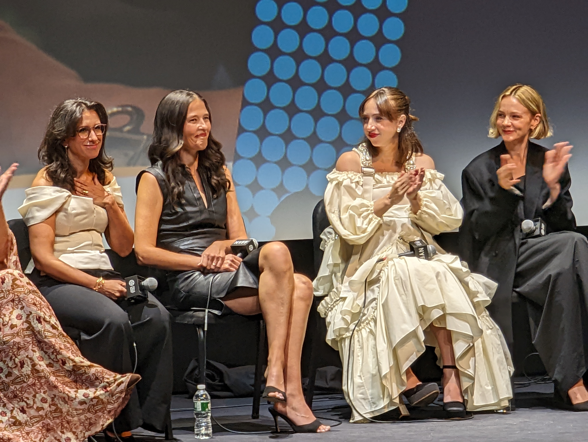

BLUF
See it!
In the pantheon of great “Reporting Procedurals” it stands tall. All The President’s Men, Spotlight, The Post; She Said is cut from the same cloth.
Why should you see it?
I confess: I love this genre. The combination of elements is so powerful: detection, a quest for justice, underdog reporters and victims fighting entrenched authorities to get out an important and hard-won truth. Done right, the emotions it works with are really powerful: mystery, suspense, righteousness. And She Said does it right.
It could be argued that it’s not an inherently cinematic genre. That storytelling through the combination of moving image and sound is not advantaged by a form that centers on people who spend most of their effort on the phone or writing. In the abstract that argument might fly. But boy did my face flush in anger seeing the depictions of Weinstein’s victims. My pulse shot up when Weinstein entered the Times building. My head spun with excitement when sources came forward.
Even knowing how things turned out, I couldn’t help but feel the suspense: would the reporters find someone willing to go on the record? What would Weinstein and his people do to stop the story from coming out? All over gain, I felt such rage at Weinstein and, even more, at the legions of people who helped him. 82 women have gone on the record as being victims of Weinstein.
The cast is uniformly terrific, especially the leads. It was a trip to see Megan Twohey on stage with Carey Mulligan, and to experience how much Mulligan became Twohey, nailing her voice and her mannerisms.
Notes from the screening
Even weeks after seeing the movie, I kept thinking about all those enablers: lawyers, PR people, payers of hush money, they’re accomplices. Or worse. How many women might have been saved if Weinstein hadn’t had the protection of so many lawyers, publicists, helpers. There is a terrible truth about our system and how it can be perfectly legal and ethical to be in the business of protecting the powerful from justice.
